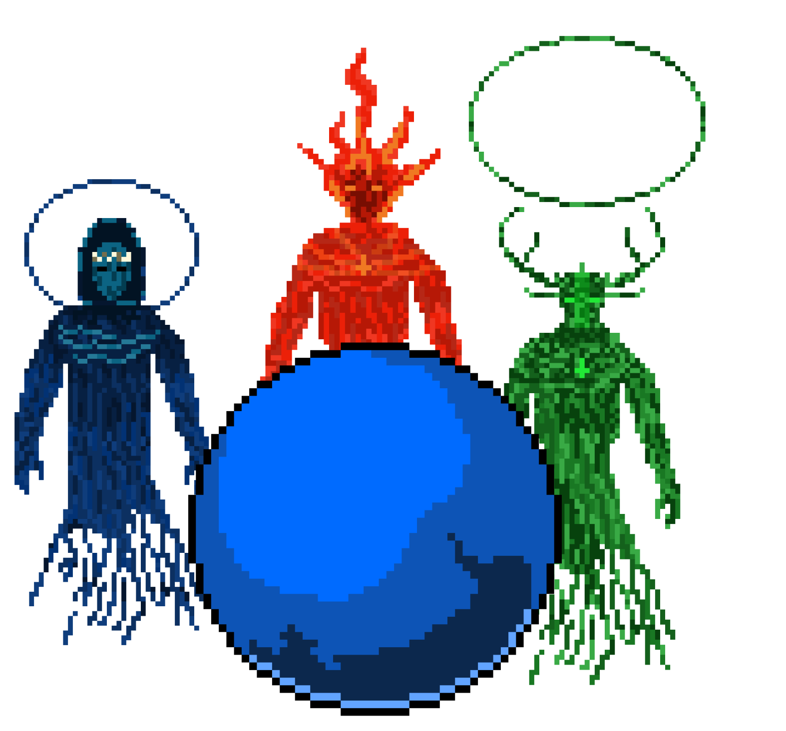
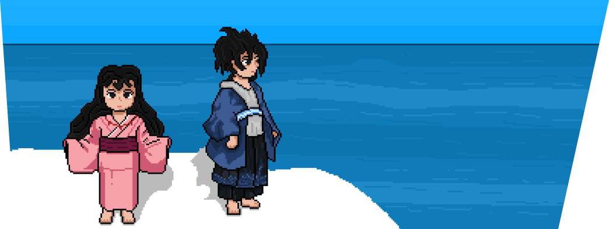
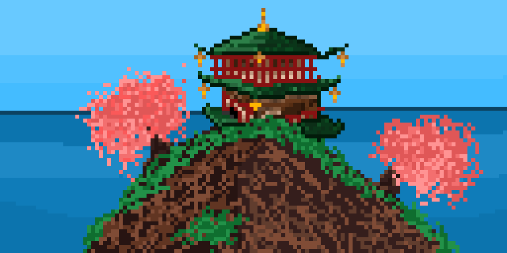
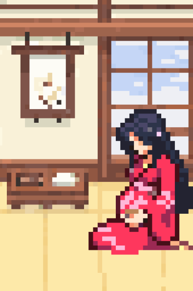
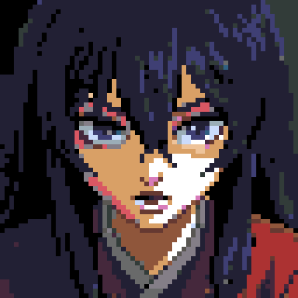
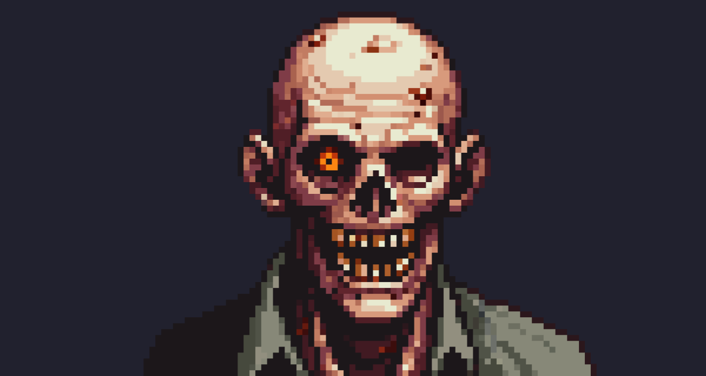
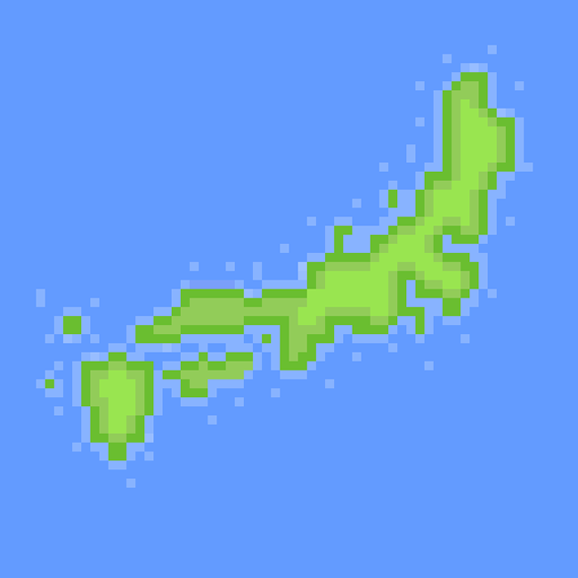
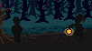
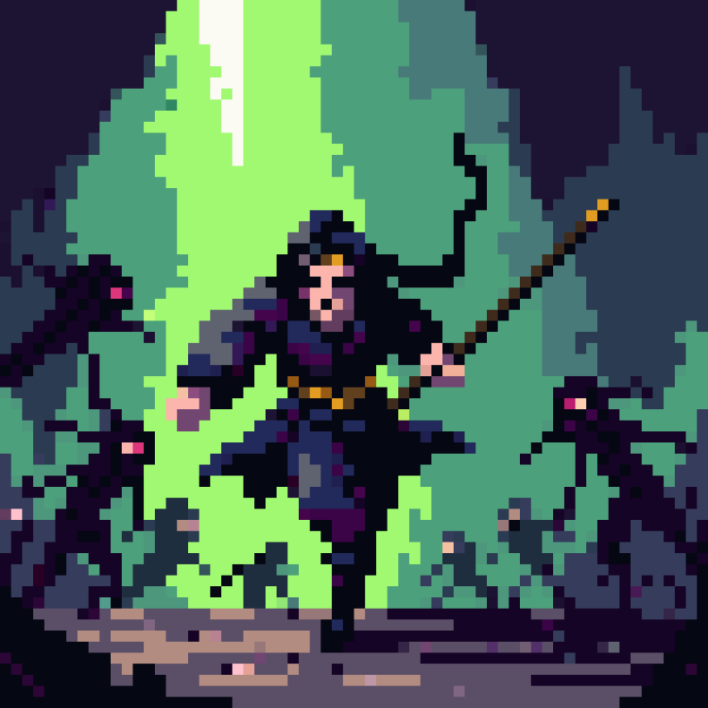
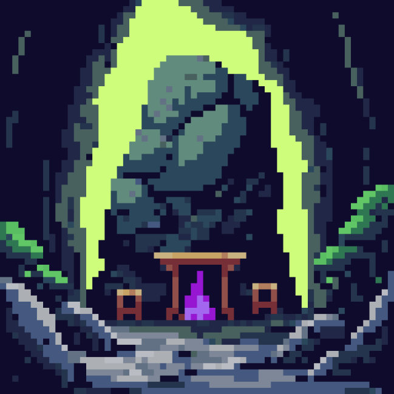

Em seu palácio acima da Ilha de Onogoro, Izanami e Izanagi se casam.
O Mito da Criação Japonesa
No início de todos os tempos, o Caos dominava todo o Universo...
Até que, a partir de uma massa primordial, os Deuses criaram o Céu e a Terra.
Entretanto, os Espíritos Divinos que criaram o mundo, perceberam o vazio de sua criação, e então originaram duas novas divindades.
Izanagi e Izanami tinham uma missão: criar tudo que existiria no mundo e preencher o vazio que ali habitava.
A dupla recebeu uma lança divina das mãos dos Deuses Primordiais. Um belo e poderoso artefato, adornado com jóias preciosas e dotado de poderes incríveis, chamado de Amenonuhoko

Fazendo uso da Amenonuhoko, eles agitaram o oceano, e, com uma gota que caiu da lança, criaram a sagrada ilha de Onogoro.
Acima da pequena ilha, os dois Deuses criaram um palácio.
Enquanto trabalhavam em harmonia, criando tudo que existia na Terra, os deuses se apaixonam um pelo outro, porém, a união não funcionou como o esperado.
A proximidade fez com que os Deuses se apaixonassem e então...
Em seu palácio acima da Ilha de Onogoro, Izanami e Izanagi se casam.

A Deusa Izanami convidou seu marido para que se unissem, e Izanagi prontamente aceitou o convite, com o objetivo de gerar uma nobre descendência.
Após a união do casal, seus filhos começaram a nascer...
 Entretanto, a união deu frutos a criaturas deformadas.
A causa? O ritual de união foi realizado da maneira errada, pois o papel da iniciativa não era da Divindade Feminina
Após compreender o motivo do erro, o casal tomou a decisão de tentar novamente, agora, com iniciativa de Izanagi.
E então, Izanagi e Izanami originaram uma nova geração de Deuses.
Logo depois, o casal originou mais algumas ilhas, gerando então, o arquipélago japonês.
Izanami engravida mais uma vez, contudo, ao dar a luz a Kagutsuchi, o Deus do Fogo, Izanami morre e seu espírito parte para o Yomi, o Mundo dos Mortos.

Izanagi se recusou a aceitar a morte de Izanami e saiu em busca do Yomi.
Yomi era um local moldado por impureza, repleto de criaturas corruptas e Onis.
Em meio ao breu do submundo, Izanagi encontrou sua amada, porém, ao iluminá-la, a visão gerou horror em Izanagi.
A Deusa Izanami estava em um estado de decomposição avançado, sua pureza foi destruída pela podridão.
Izanagi recusou Izanami após a visão de sua podridão, gerando fúria na falecida Deusa, que fez os monstros do submundo perseguirem o Deus.
Izanami comeu frutos do submundo, fazendo com que seu vínculo com o Yomi fosse inquebrável.
Izanagi fugiu e bloqueou a entrada do submundo na Terra com uma grande rocha, prendendo Izanami para sempre.
Izanagi se sentia impuro após a jornada no Mundo dos Mortos, e então se banhou, em busca de se purificar
Sua purificação acabou gerando diversos seres, como Yokais e Deuses.
Ainda no banho, o Deus sentiu a tristeza da perda e então, suas lágrimas caíram


Pelo seu olho esquerdo, nasceu Amaterasu, uma Divindade de brilho imensurável, iluminando tudo à sua volta.
Das lágrimas do olho direito, surge Tsukuyomi. Ele não brilhava tanto quanto a irmã, mas sua luminosidade ainda encantava.
Escorrendo por seu nariz, nasce Susanoo, uma divindade agitada e imparável.


Amaterasu, A Radiante Deusa do Sol.
Tsukuyomi, O Encantador Deus da Lua.

Susanoo, O Travesso Deus dos Mares e Tempestades